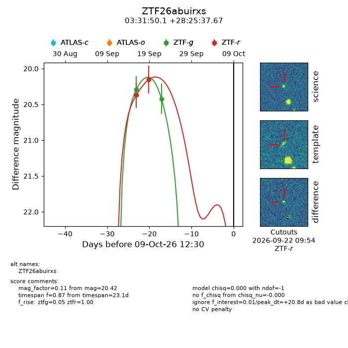
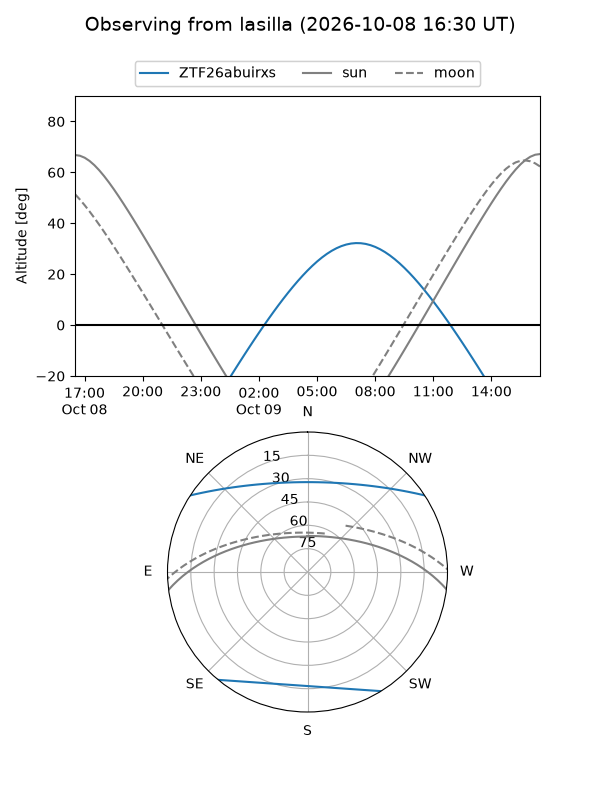
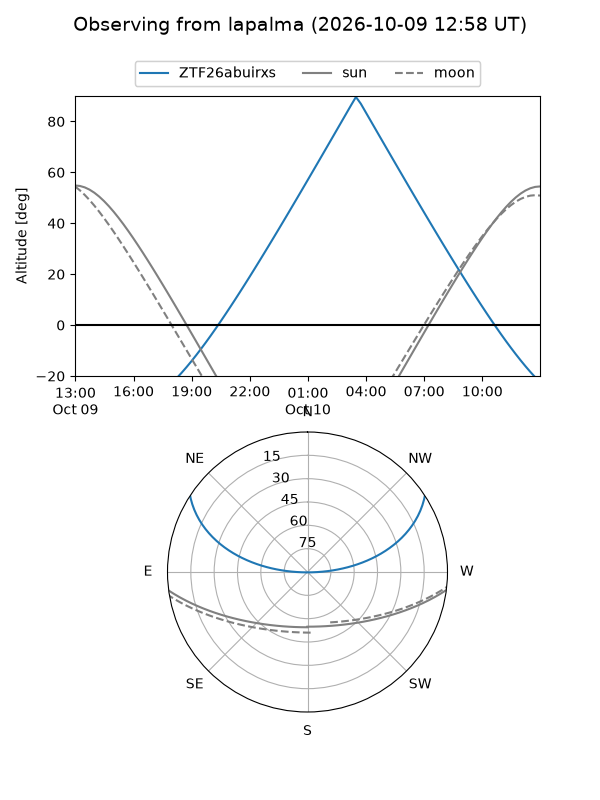
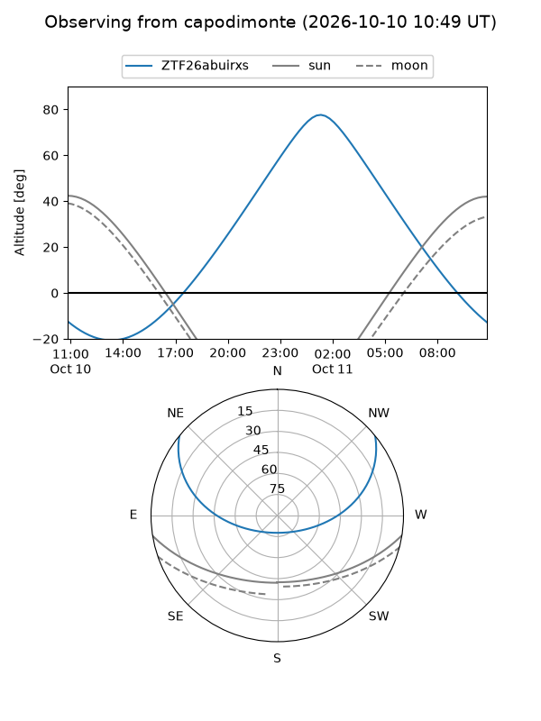
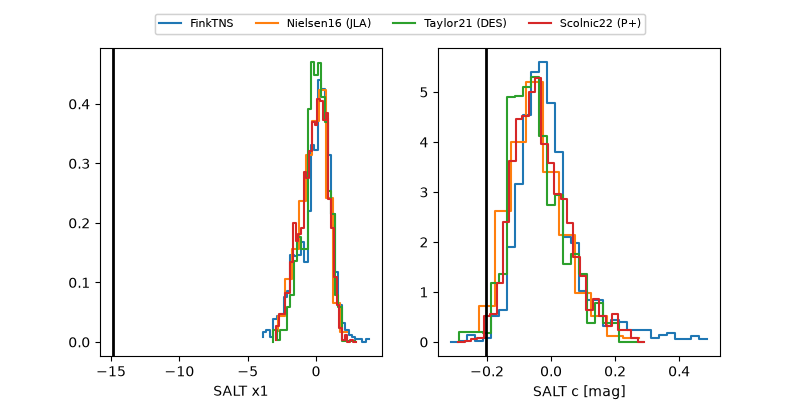

ZTF26abuirxs
Target ZTF26abuirxs at 2026-10-09 12:32
Aliases and brokers:
FINK-ZTF: ztf.fink-portal.org/ZTF26abuirxs
Lasair-ZTF: lasair-ztf.lsst.ac.uk/objects/ZTF26abuirxs
ALeRCE-ZTF: alerce.online/object/ZTF26abuirxs
Direct TNS query: direct search
alt names
ZTF26abuirxs (ztf,fink_ztf)
Coordinates:
equatorial (ra, dec) = 52.9588,+28.42713
equatorial (HMS+DMS) = 03:31:50.12,+28:25:37.67
galactic (l, b) = (160.7264,-22.43436)
Flags:
peak dt: +20.8
Photometry:
last ztfg=20.42, ztfr=20.15
2 ztfg, 2 ztfr detections
Lightcurve

Visibility



Additional plots
